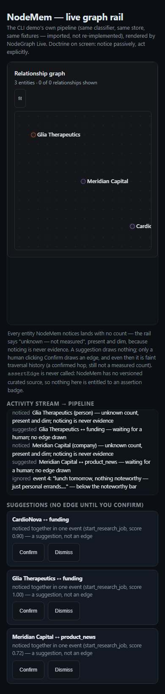
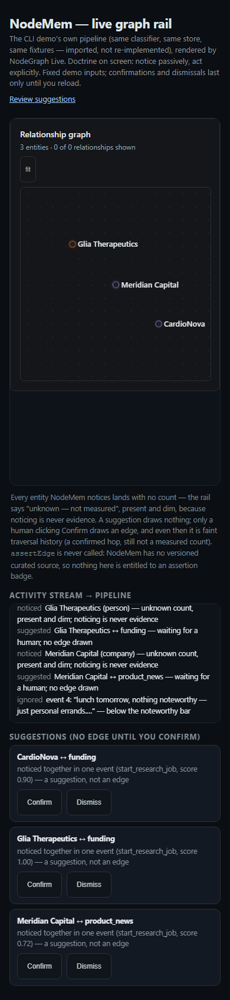

<!doctype html><html lang="en"><meta charset="utf-8"><title>NodeMem actual before and after</title><style>body{margin:16px;background:#fff;color:#17243b;font:14px system-ui}main{display:flex;gap:16px;align-items:start}figure{margin:0;width:390px}figcaption{height:46px}img{display:block;width:390px;height:auto}</style><main><figure><figcaption>BEFORE · unchanged fixture, 390×844, dark<br>main 8311805, no confirmation</figcaption></figure><figure><figcaption>AFTER · same fixture, 390×844, dark<br>review candidate, no confirmation</figcaption></figure></main></html>
